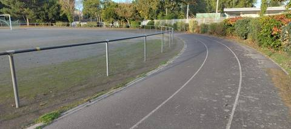
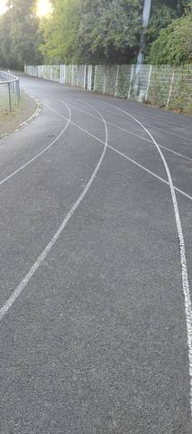
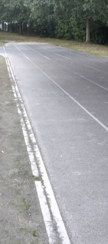
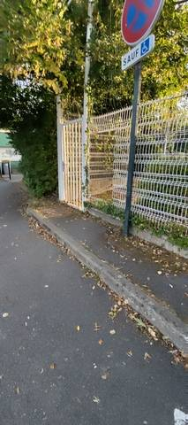

{kind=link}
{kind=link}
{kind=link}
{kind=link}
Cette piste m'a permis de comprendre ce qu'est une piste de 300 m : en gros, c'est une piste en bitume qui fait le tour strict d'un terrain de foot, sans vraiment d'écart entre l'anneau et le terrain. Visuellement, il est difficile de voir la différence entre 300 et 400 m. Je pense que c'est une piste qui peut répondre au besoin de certains coureurs occasionnels.
Plaine de Jeux de la Geraudiere
Rue Santos Dumont, 44000 Nantes · Loire-Atlantique
Plaine de Jeux de la Geraudiere is an athletics venue in Nantes (Loire-Atlantique), Pays de la Loire, France. It has a 300 m asphalt / tarmac running track with 3 lanes. It also offers long jump pit. The venue provides floodlighting. Access is free and unrestricted.
Photos




A photo is surely still missing
Jump pits and throwing areas are what public data describes worst, and what gets photographed least. A close-up of the ground, a covered vault pit, a sand box gone to weeds: each adds what no field carries.
Send a photoNo GitHub account?Track
- Surface
- Asphalt / tarmac
- Lap length
- 300 m
- Track type
- Athletics stadium oval
- Lanes
- 3
- Setting
- Outdoor
- Opened
- 1993
Recorded facilities
- Long jump pit
Access & amenities
- Free access
- Yes
- Floodlighting
- Yes
- Changing rooms
- No
- Showers
- No
- Toilets
- No
Visite du 2 septembre 2026, en fin de journée : l'enceinte est accessible en continu parce que le grillage a été découpé et replié sur un panneau, côté rue. Ce n'est pas une ouverture officielle — c'est une brèche, et elle peut être réparée à tout moment. Aucun panneau d'horaires ni règlement n'a été vu à l'entrée. L'éclairage a été vu en place ; rien ne dit à quelles heures il fonctionne.
Athlete reviews
Le développement déclaré par le recensement est faux. Le ministère annonce 333 m ; la mesure sur place à la montre GPS, le 2 septembre 2026, donne 300 m. OpenStreetMap le confirme de son côté : le tracé de l'anneau (way/170610160, leisure=track) a un périmètre de 296,6 m. Deux sources indépendantes contre une : c'est 300 m qui est écrit ici, et 333 qui est écarté. Ce qui explique cette longueur se voit sur place : l'anneau ceinture au plus près un terrain de football, sans dégagement entre les deux — OpenStreetMap tague ce terrain surface=compacted, un stabilisé, et on le voit moussu au centre sur la photo du virage. C'est le tour strict d'un terrain de foot, pas un anneau d'athlétisme dimensionné pour lui-même. Visuellement, rien ne distingue une telle piste d'un 400 m : il faut la parcourir pour s'en rendre compte. Trois couloirs sont tracés sur l'anneau, et jusqu'à cinq sur la ligne droite. Le revêtement est du bitume, foulé sur place et non déduit d'une image. Un sautoir en longueur a été vu ; aucun autre agrès ne l'a été, ce qui ne dit pas qu'il n'y en a pas.
Other venues in the department
- Lycee Gaspard Monge - la Chauviniere
- Installation du Suaps
- Stade d’Athlétisme Pierre Quinon
- Plaine de Jeux des Basses Landes
- Lycee College la Perverie
- College Talence
Official website of the venue · Report an error or complete this record
Réf. I441090215 · Source: Data ES + community — Data ES, French ministry for sport, Licence Ouverte 2.0. Records are self-declared and may be incomplete: check access conditions before travelling.